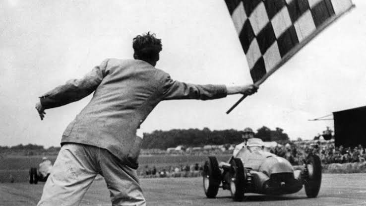
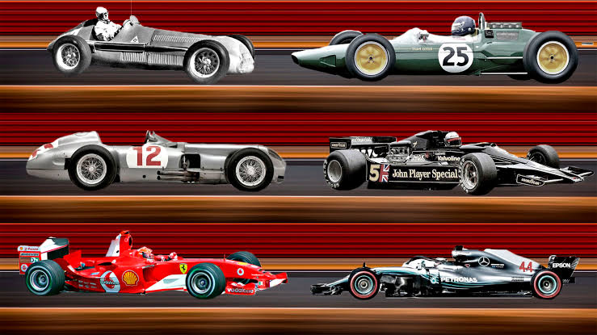
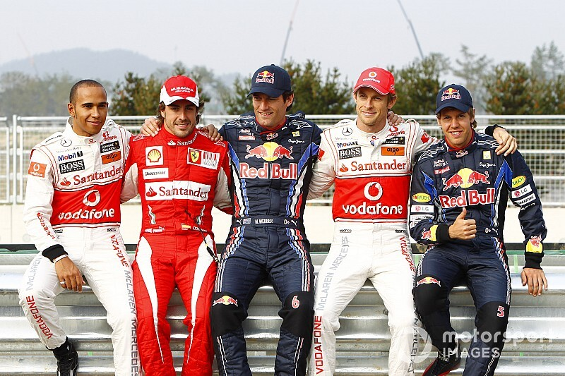

Historia
El Campeonato Mundial de Fórmula 1 empezó en 1950 y el de Constructores se sumó en 1958. Desde entonces, la categoría pasó por la aerodinámica, la fibra de carbono, los motores turbo, la mejora constante de la seguridad (con el Halo desde 2018) y los motores híbridos desde 2014. En 2026 entra un nuevo reglamento técnico. Fangio, Senna, Schumacher, Hamilton y Verstappen marcaron cada época.
Los comienzos

La Fórmula 1 tiene sus orígenes en las carreras de automóviles que se realizaban en Europa durante las primeras décadas del siglo XX. Antes de que existiera un campeonato mundial, ya se disputaban diferentes competencias entre pilotos y fabricantes.
En 1950 se creó oficialmente el Campeonato Mundial de Fórmula 1. La primera carrera se realizó el 13 de mayo de 1950 en el circuito de Silverstone, Reino Unido. El ganador fue el italiano Giuseppe Farina, quien también se convirtió en el primer campeón mundial de la categoría.
Durante los primeros años, los autos eran mucho más simples que los actuales. Tenían menos medidas de seguridad, los motores eran diferentes y los pilotos tenían que soportar condiciones muy exigentes durante las carreras.
Uno de los primeros grandes protagonistas fue el argentino Juan Manuel Fangio, que consiguió cinco campeonatos mundiales durante la década de 1950 y se convirtió en una de las primeras grandes figuras de la Fórmula 1.
Evolución tecnológica

La tecnología fue cambiando completamente la Fórmula 1 a lo largo de los años. Los equipos comenzaron a buscar formas de hacer los autos más rápidos, eficientes y seguros.
Uno de los cambios más importantes fue el desarrollo de la aerodinámica. Los ingenieros comenzaron a utilizar alerones y diferentes diseños para generar carga aerodinámica y permitir que los autos tuvieran mayor agarre en las curvas.
También evolucionaron los motores, los frenos, las suspensiones y los materiales utilizados para construir los monoplazas. Con el tiempo comenzaron a utilizarse materiales más livianos y resistentes, como la fibra de carbono.
La seguridad también tuvo una enorme evolución. Se incorporaron estructuras de protección, zonas de absorción de impactos, sistemas de protección para la cabeza y mejoras importantes en los circuitos.
En 2014 comenzó la era de los motores híbridos. Los autos pasaron a utilizar unidades de potencia que combinan un motor de combustión con sistemas eléctricos capaces de recuperar energía durante la frenada.
Actualmente, la Fórmula 1 utiliza una gran cantidad de tecnología para analizar el rendimiento del auto, estudiar los neumáticos, mejorar la aerodinámica y desarrollar estrategias durante las carreras.
Grandes pilotos

A lo largo de la historia de la Fórmula 1 compitieron pilotos que marcaron diferentes épocas y se convirtieron en grandes figuras del automovilismo.
Juan Manuel Fangio:
Fue uno de los primeros grandes campeones de la Fórmula 1. Consiguió cinco campeonatos mundiales entre 1951 y 1957 y compitió para importantes equipos como Mercedes, Ferrari, Maserati y Alfa Romeo.
Ayrton Senna:
Fue uno de los pilotos más destacados de las décadas de 1980 y 1990. Consiguió tres campeonatos mundiales y fue reconocido especialmente por su velocidad en clasificación y su habilidad para conducir bajo la lluvia.
Michael Schumacher:
El piloto alemán consiguió siete campeonatos mundiales y tuvo una etapa especialmente exitosa con Ferrari. Durante los primeros años de la década de 2000 consiguió cinco títulos consecutivos.
Lewis Hamilton:
Hamilton consiguió siete campeonatos mundiales y es uno de los pilotos con más victorias y pole positions de la historia de la categoría. Gran parte de sus éxitos los consiguió junto a Mercedes.
Max Verstappen:
Verstappen pertenece a una generación más reciente de pilotos. Debutó en la Fórmula 1 en 2015 y consiguió su primer campeonato mundial en 2021 con Red Bull Racing. Posteriormente logró varios títulos más y se convirtió en uno de los principales protagonistas de la categoría.